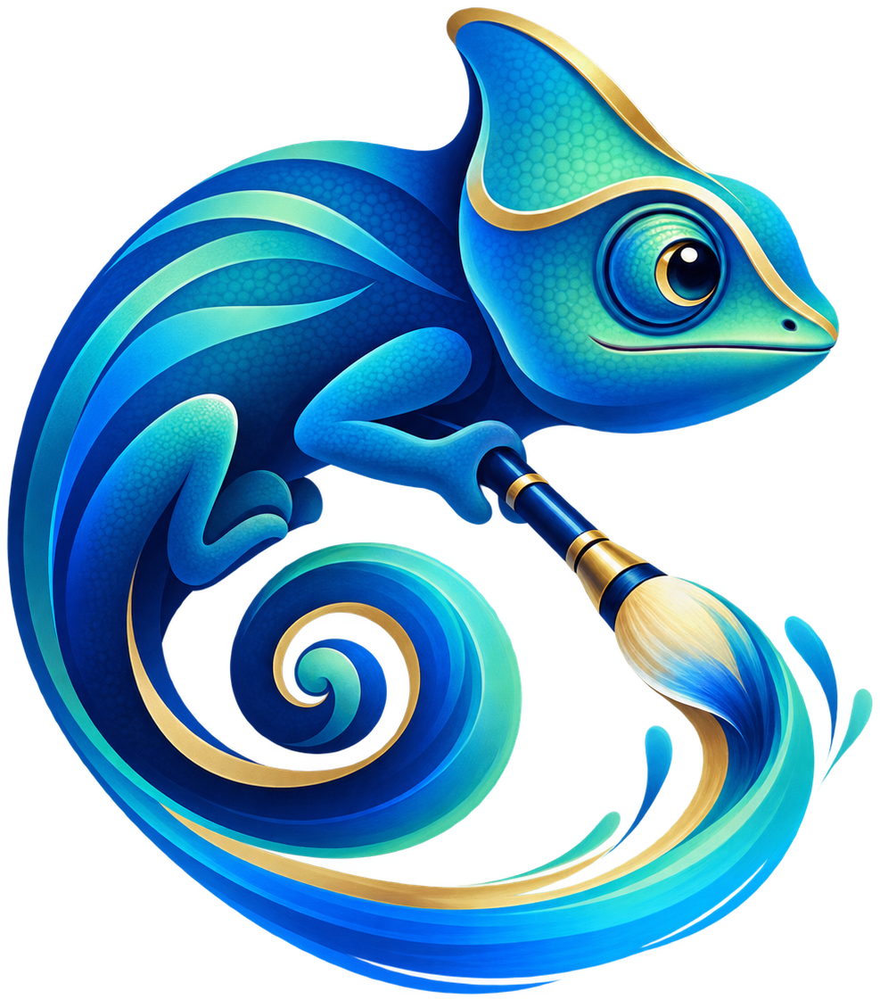

MaLiang-Harness: A Programmable Pathto Image and Video Generation
1 National University of Singapore2 Fudan University3 Tencent
Video generation
Abstract
MaLiang-Harness organizes MLLM-driven image and video generation as a persistent process of program construction, visual inspection, and revision. It addresses the gap between a program that executes and a visual result that follows the request. Programs, edits, and rendered evidence share a common revision reference.
Hover over an image to inspect local detail. Click to open the full image. On touch screens, tap to enlarge.
Illustrations
Scenes, portraits, and character studies.
Posters and Infographics
Layout, typography, and information-rich compositions. Research figures shown here are illustrative examples, not reported benchmark results.
Reference-based and Editing Examples
Selected outputs from reference-based and revision tasks. Original prompts are available for each result.
Painting and 3D Rendering
Studies of form, materials, and light.
Offline Renderer Demos
Scripted fixtures for renderer testing. These are separate from the model-generated examples above.
Method
Generation proceeds through program construction, visual inspection, and revision, with a shared reference connecting executable state to rendered evidence.
- PEG
- Persistent executable state.
- TGP
- Traceable generation process.
- REV
- Revision-aware editing and verification.
Citation
If you use MaLiang-Harness in your research, please cite our paper.
@misc{zhao2026maliangharness,
title={MaLiang-Harness: A Programmable Path to Image and Video Generation},
author={Haoyu Zhao and Zihao Zhang and Xudong Wang and Jiaxi Gu and Zuxuan Wu and Yu-Gang Jiang and Shuicheng Yan},
year={2026},
eprint={2609.34309},
archivePrefix={arXiv},
primaryClass={cs.CV},
url={https://arxiv.org/abs/2609.34309}
}